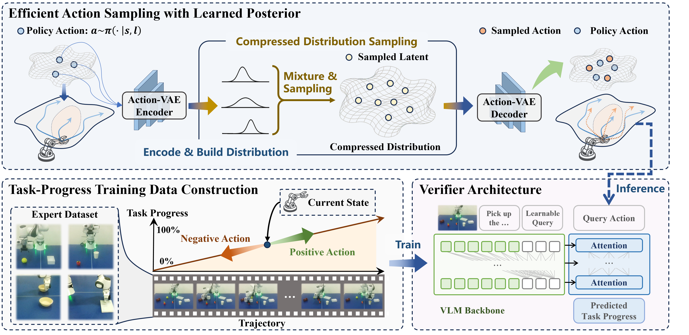

Abstract
Existing embodied control research demonstrates remarkable performance improvements by scaling training data and model size. We instead explore inference-time strategy as an alternative axis. Non-deterministic generative models, such as diffusion and autoregressive models, have been widely adopted in the field of embodied control. However, the single-shot inference paradigm limits their performance. In this paper, we propose \textbf{TapSampling}, a plug-and-play framework for inference-time sampling. First, we introduce an Action-VAE to represent actions in a low-dimensional latent space. The Action-VAE maps initial actions from policies into a compressed posterior distribution, from which an arbitrary number of latent samples can be drawn and decoded into candidate actions that approximately follow the true action distribution. Second, we formulate action verification as task-progress outcome prediction and train the verifier by leveraging the intrinsic sequential information of robotic datasets. The predicted scores have clear semantic grounding, enabling interpretable action selection. Furthermore, TapSampling is a policy-agnostic framework. Extensive experiments in both simulated and real-world environments demonstrate that our method effectively improves multiple generalist policies substantially without further finetuning the policy models.
Framework

Action Sampling
A small set of actions is sampled from the policy, encoded and mixed into a compressed latent distribution by the Action-VAE encoder. Multiple latent samples are then drawn from the learned posterior and decoded into diverse, high-quality action candidates efficiently.
Action Verification
Positive and negative training examples are constructed automatically from expert trajectories using their intrinsic sequential information, and a verifier is trained to predict task-progress changes, which enables interpretable action selection.
Performance
Main results on the CALVIN ABC→D benchmark. TapSampling significantly improves the task success rate and the average success length of representative non-deterministic policies (Diffusion Policy, OpenVLA, and VPP) in a plug-and-play manner without further fine-tuning these policies.
| Method | ith Task Success Rate | |||||
|---|---|---|---|---|---|---|
| 1 | 2 | 3 | 4 | 5 | Avg. Len. ↑ | |
| Robo-Flamingo | 82.4 | 61.9 | 46.6 | 33.1 | 23.5 | 2.48 |
| RoboDual | 94.4 | 82.7 | 72.1 | 62.4 | 54.4 | 3.66 |
| ReconVLA | 95.6 | 87.6 | 76.9 | 69.3 | 64.1 | 3.95 |
| Seer | 96.3 | 91.6 | 86.1 | 80.3 | 74.0 | 4.28 |
| DreamVLA | 98.2 | 94.6 | 89.5 | 83.4 | 78.1 | 4.44 |
| Diffusion Policy | 82.1 | 61.7 | 45.6 | 31.4 | 20.5 | 2.41 |
| + TapSampling | 83.9 (+1.8) | 65.1 (+3.4) | 48.8 (+3.2) | 35.7 (+4.3) | 24.7 (+4.2) | 2.58 (+0.17) |
| OpenVLA | 93.4 | 78.2 | 64.1 | 52.2 | 42.4 | 3.30 |
| + TapSampling | 94.5 (+1.1) | 80.9 (+2.7) | 68.6 (+4.5) | 57.7 (+5.5) | 48.8 (+6.4) | 3.51 (+0.21) |
| VPP | 96.4 | 92.3 | 88.4 | 84.0 | 78.3 | 4.39 |
| + TapSampling | 96.5 (+0.1) | 92.9 (+0.6) | 89.4 (+1.0) | 86.4 (+2.4) | 81.1 (+2.8) | 4.46 (+0.07) |
BibTeX
@inproceedings{zhao2026tapsampling,
title={{T}ap{S}ampling: Inference-Time Sampling with a Task-Progress-Understanding Verifier for Robotic Manipulation},
author={Sizhe Zhao and Shengping Zhang and Shuo Yang and Weiyu Zhao and Shuigen Wang and Xiangyang Ji},
booktitle={Forty-third International Conference on Machine Learning},
year={2026}
}